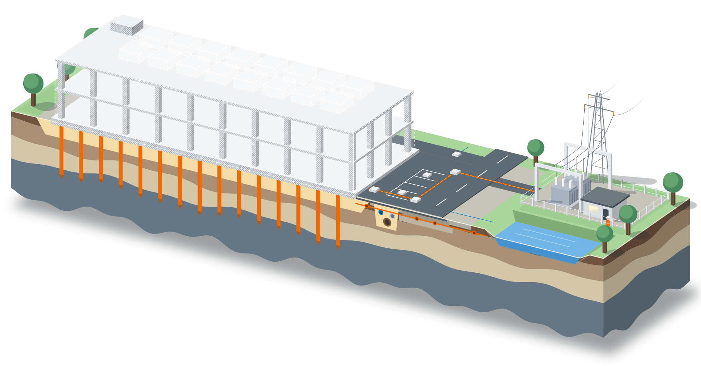

Datacenter: mark, grund och elanslutning
GRK är en infrastrukturentreprenör som bygger allt under och runt ditt datacenter, från tomt till elanslutning, med ett kontrakt. Ta gärna in oss redan medan investeringen planeras.
- Med redan innan investeringsbeslutet
- En entreprenör från tomt till elnät
- Samverkan eller egen entreprenad
Innan ni väljer entreprenör
Datacenter i Finland och industri i samma skala i Sverige, med hela koncernen bakom leveransen.
2
datacenterprojekt pågår i koncernen, i Finland
Vi bygger datacenter redan i dag
GRK och KSBR bygger mark, infrastruktur och betong åt teknikbolag i Finland.
8
ställverks- och stationsprojekt i koncernen
Elanslutningen från samma koncern
Tomt, grund och ställverk från en och samma koncern.
1 066,6
M€ orderstock i koncernen 30.9.2026
Vi bär ett stort projekt
GRK är börsnoterat med öppen ekonomi, och hela koncernen står bakom leveransen.
Hela infrastrukturen från en entreprenör
I ett datacenterprojekt hänger arbetsmomenten ihop och tidplanen är tät. När en entreprenör ansvarar för hela kedjan väntar ingen på någon annan.

Markarbeten
Vi gör tomten byggbar: röjning, schakt, sprängning, fyllning och massbyte. Förorenad mark och överskottsmassor tar vi hand om i samma entreprenad. När grunden är rätt gjord kan nästa moment börja enligt tidplanen.
Markarbeten och anläggning
Grundläggning och pålning
Datacentrets tunga konstruktioner och utrustning kräver en bärande grund. Vi utför grundförstärkning, borrpålning och grundläggning för byggnaden, transformatorerna och reservkraften, också på svag mark.
Grundläggning och grundförstärkning
VA och ledningar
Vi bygger tomtens vatten, avlopp och dagvattensystem och ledningarna till anslutningspunkterna. Rören för kylningen planeras samtidigt, så att de inte korsar kabelvägarna senare.
Markarbeten och anläggning
Vägar och ytor
Byggvägarna bär tunga maskiner under hela bygget och blir sedan vägar för servicetrafiken. Vi bygger gårdsytor, parkering och planer runt hallarna.
Markarbeten och anläggning
Kabelförläggning
Vi förlägger mellan- och högspänningskablar, kabelkanaler och skyddsrör från ställverket till datacentret. Kabelvägarna byggs i samma entreprenad som markarbetena, så schakten behöver inte öppnas igen.
Energi och kraftnät
Ställverk och elanslutning
Vi bygger ställverket och anslutningen till region- eller stamnätet enligt nätägarens krav. Anslutningen går parallellt med övriga arbeten, så att den inte blir projektets flaskhals.
Energi och kraftnätHar ni ett projekt på gång?
En kontaktperson ansvarar för hela projektet. Berätta vad ni planerar, så berättar vi hur vi genomför det.
Datacenter och elanslutning vi har byggt
Datacenter i Finland, elanslutning till stamnätet och marken för Stegras stålverk i Boden.
PågårDatacenterprojekt i Finland
GRK bygger mark och infrastruktur runt ett datacenter. Värde för GRK cirka 66 miljoner euro.
Läs nyhetenDelar av ett datacenter som vi har byggt
Markarbeten för Stegras stålverk
Industri i datacenterskala: schakt, pålning, grundförstärkning, VA och kablar.
Läs referensenPågårStamnätets 400 kV kabelförbindelse
Elanslutning och kablar: Finlands första så omfattande 400 kV markkabel.
Läs referensenStällverk för Kalkkimaa energipark
GRK har valts att bygga ställverket för energiparken.
Läs nyhetenSå går projektet till
Investeringen planeras
Vi går igenom mark, grundläggning och elanslutning med er, utan förpliktelser. En halvfärdig plan räcker.
Lösning och budget
Ni får en genomförbar lösning och en budget innan förfrågan skrivs.
Rätt samarbetsform
Samverkan, totalentreprenad eller underentreprenad, efter vad projektet behöver.
En kontaktperson
Samma person följer projektet från första samtalet.
Investeringen planeras, men planen är inte klar? Vi planerar tillsammans
Vi går igenom mark, grundläggning, el och tidplan med er innan förfrågan skrivs. En halvfärdig plan räcker.
Hjälp med planeringen
Vi går igenom skissen med er och föreslår lösningar som är enklare och billigare att bygga.
Planeringspartner för hela projektet
I totalentreprenad och samverkan projekterar vi själva eller tillsammans med er projektör, ända till överlämningen.
Passar metoden din plan?
Som projektör kan du stämma av metoden direkt med en expert innan den går in i handlingarna.
Entreprenadformer
Vi väljer form efter projektet. Ju tidigare vi är med, desto mer kan vi påverka lösningar och kostnader.
Samverkan
Beställare, huvudentreprenör, projektör och GRK i ett team, med öppna kalkyler och en gemensam tidplan. Vi är med från planeringen.
Totalentreprenad
GRK projekterar och bygger marken, och ansvarar för helheten. Beställaren beskriver vad som ska uppnås.
Utförandeentreprenad
Beställaren låter projektera, och GRK bygger enligt handlingarna med ett kontrakt.
Underentreprenad
Du har kontraktet med beställaren. Vi tar mark, grund och el åt dig, med egna maskiner och egen personal.
En koncern, hela leveransen
GRK-koncernen bygger datacentret från markarbeten till betongstomme och ställverk. KSBR, en del av koncernen, bygger grunden och stommen.

12456723- 1Markarbeten
- 2Grundläggning, pålning och pålplattor
- 3Betongstomme och platsgjutning
- 4VA och ledningar
- 5Vägar och ytor
- 6Kabelförläggning
- 7Ställverk och elanslutning
Vanliga frågor om att bygga datacenter
Bygger GRK datacenter i Sverige?
Kan ni vara med innan investeringsbeslutet?
Tar ni både markarbetena och elanslutningen?
Arbetar ni i samverkan med huvudentreprenören?
Kontaktpersoner
Ring den som kan svara. Alla svarar direkt.
Berätta om ditt projekt
Meddelandet går direkt till en expert. En halvfärdig plan räcker.
Jobba på GRK
Här fattar du egna beslut, är med redan i anbudet och får välja vilka du vill jobba med. När teamet lyckas märks det, också för dig.